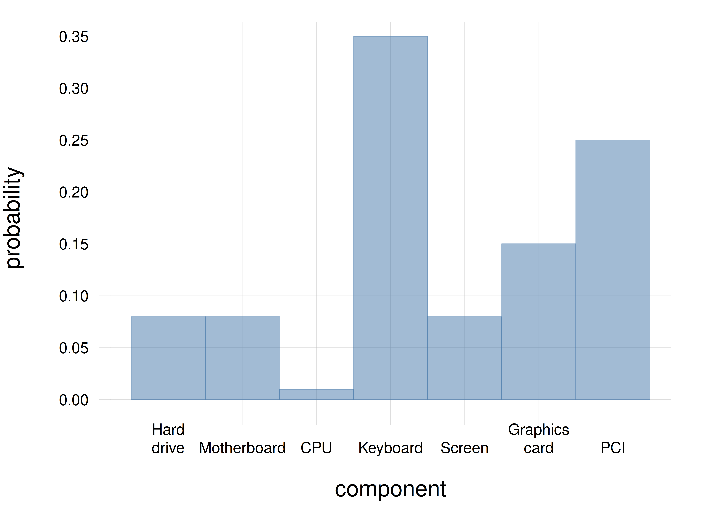
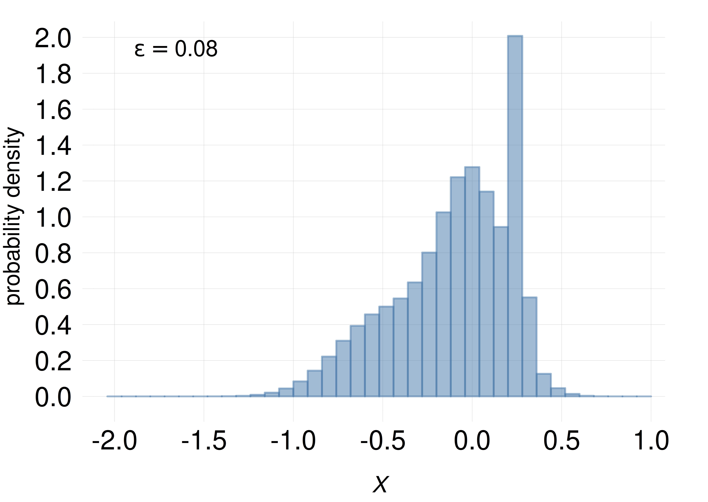
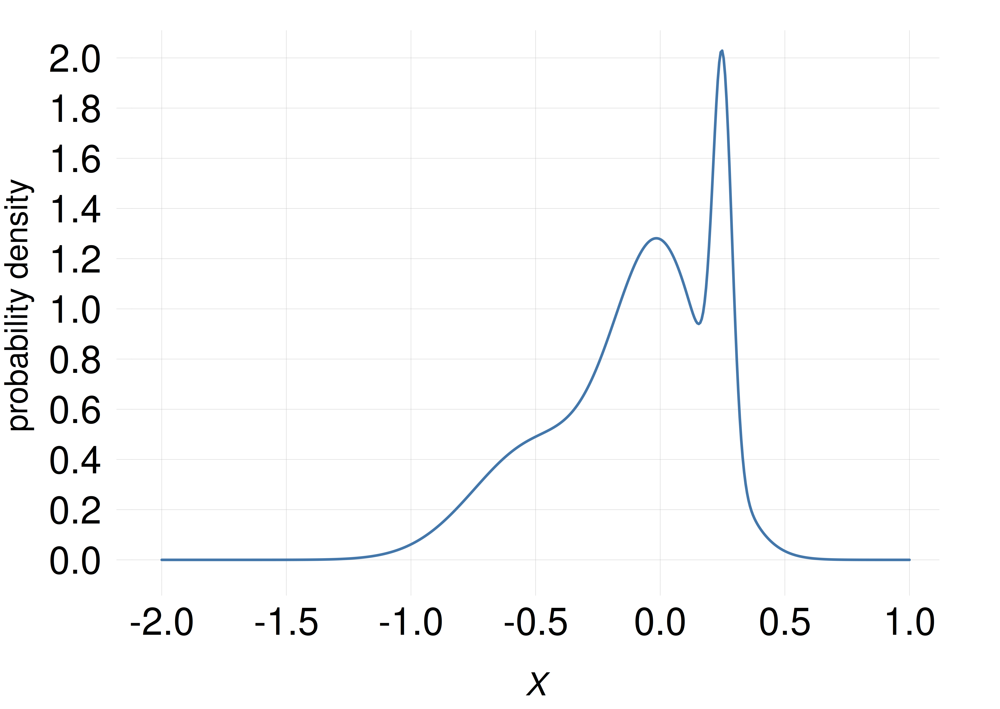
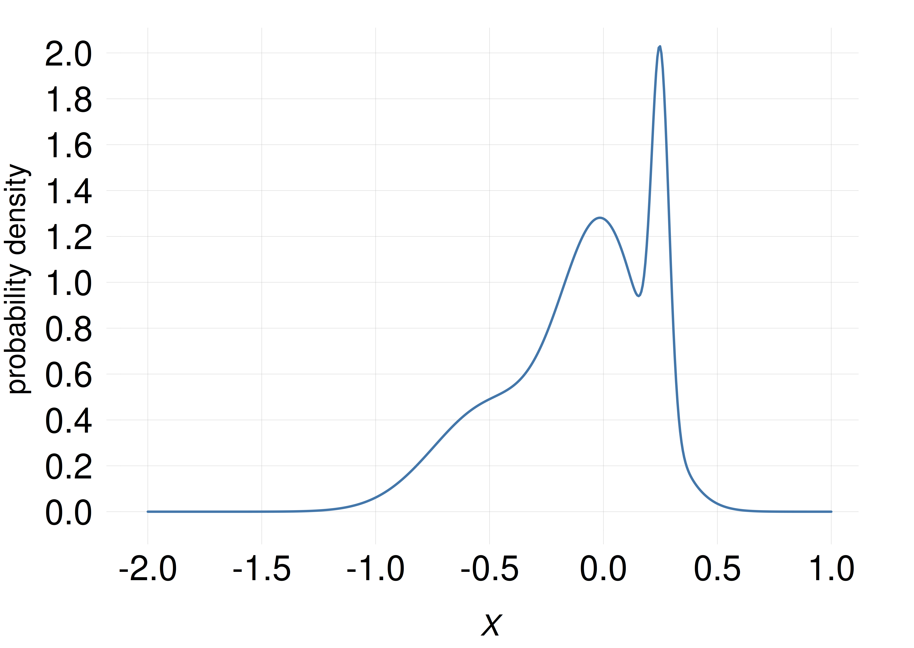
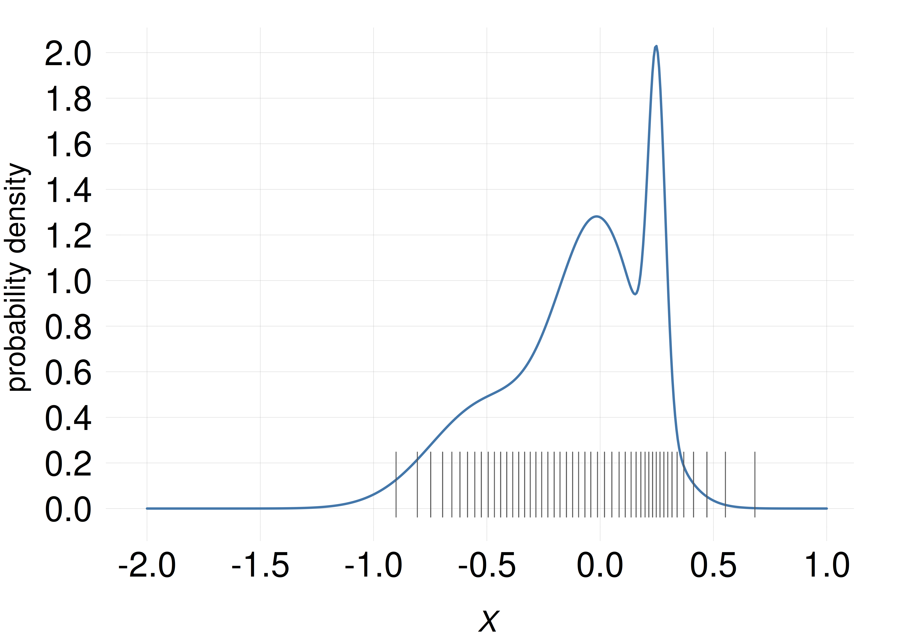
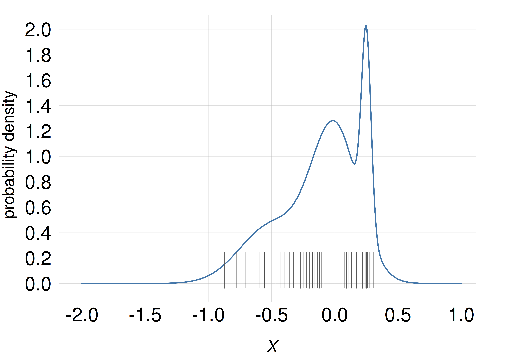

14 Probability distributions
\(\DeclarePairedDelimiter{\set}{\{}{\}}\)
Motivation for the “Inference II” part
In the “Data I” part we developed a language, that is, particular kinds of sentences, to approach inferences and probability calculations typical of data-science and engineering problems.
In the present part we focus on probability calculations that often occur with this kind of sentences and data. We also focus on how to visually represent such probabilities in useful ways.
Always keep in mind that at bottom we’re just using the four fundamental rules of inference over and over again – nothing more than that!
14.1 Distribution of probability among values
When an agent is uncertain about the value of a quantity, its uncertainty is expressed and quantified by assigning a degree of belief, conditional on the agent’s knowledge, to all the possible cases – all the possible values that could be the true one.
For a temperature measurement, for instance, the cases could be “The temperature is measured to have value 271 K”, “The temperature is measured to have value 272 K”, and so on up to 275 K. These cases are expressed by mutually exclusive and exhaustive sentences. Denoting the temperature with \(T\), these sentences can be abbreviated as
\[ {\color[RGB]{34,136,51}T = 271\,\mathrm{K}} \ , \quad {\color[RGB]{34,136,51}T = 272\,\mathrm{K} \ ,} \quad {\color[RGB]{34,136,51}T = 273\,\mathrm{K} \ ,} \quad {\color[RGB]{34,136,51}T = 274\,\mathrm{K} \ ,} \quad {\color[RGB]{34,136,51}T = 275\,\mathrm{K}} \ . \]
The agent’s belief about the quantity is then expressed by the probabilities about these five sentences, conditional on the agent’s state of knowledge, which we may denote by the letter \({\color[RGB]{204,187,68}\mathsfit{I}}\). These probabilities could be, for instance,
\[\begin{aligned} \mathrm{P}({\color[RGB]{34,136,51}T \mathclose{}\mathord{\nonscript\mkern 0mu\textrm{\small=}\nonscript\mkern 0mu}\mathopen{}271\,\mathrm{K}} \nonscript\:\vert\nonscript\:\mathopen{} {\color[RGB]{204,187,68}\mathsfit{I}}) &= {\color[RGB]{170,51,119}0.04} \\[1ex] \mathrm{P}({\color[RGB]{34,136,51}T \mathclose{}\mathord{\nonscript\mkern 0mu\textrm{\small=}\nonscript\mkern 0mu}\mathopen{}272\,\mathrm{K}} \nonscript\:\vert\nonscript\:\mathopen{} {\color[RGB]{204,187,68}\mathsfit{I}}) &= {\color[RGB]{170,51,119}0.10} \\[1ex] \mathrm{P}({\color[RGB]{34,136,51}T \mathclose{}\mathord{\nonscript\mkern 0mu\textrm{\small=}\nonscript\mkern 0mu}\mathopen{}273\,\mathrm{K}} \nonscript\:\vert\nonscript\:\mathopen{} {\color[RGB]{204,187,68}\mathsfit{I}}) &= {\color[RGB]{170,51,119}0.18} \\[1ex] \mathrm{P}({\color[RGB]{34,136,51}T \mathclose{}\mathord{\nonscript\mkern 0mu\textrm{\small=}\nonscript\mkern 0mu}\mathopen{}274\,\mathrm{K}} \nonscript\:\vert\nonscript\:\mathopen{} {\color[RGB]{204,187,68}\mathsfit{I}}) &= {\color[RGB]{170,51,119}0.28} \\[1ex] \mathrm{P}({\color[RGB]{34,136,51}T \mathclose{}\mathord{\nonscript\mkern 0mu\textrm{\small=}\nonscript\mkern 0mu}\mathopen{}275\,\mathrm{K}} \nonscript\:\vert\nonscript\:\mathopen{} {\color[RGB]{204,187,68}\mathsfit{I}}) &= {\color[RGB]{170,51,119}0.40} \end{aligned} \]
Note that they sum up to one:
\[ \begin{aligned} &\quad\mathrm{P}({\color[RGB]{34,136,51}T \mathclose{}\mathord{\nonscript\mkern 0mu\textrm{\small=}\nonscript\mkern 0mu}\mathopen{}271\,\mathrm{K}} \nonscript\:\vert\nonscript\:\mathopen{} {\color[RGB]{204,187,68}\mathsfit{I}}) + \dotsb + \mathrm{P}({\color[RGB]{34,136,51}T \mathclose{}\mathord{\nonscript\mkern 0mu\textrm{\small=}\nonscript\mkern 0mu}\mathopen{}275\,\mathrm{K}} \nonscript\:\vert\nonscript\:\mathopen{} {\color[RGB]{204,187,68}\mathsfit{I}}) \\[1ex] &= {\color[RGB]{170,51,119}0.04}+{\color[RGB]{170,51,119}0.10}+{\color[RGB]{170,51,119}0.18}+{\color[RGB]{170,51,119}0.28}+{\color[RGB]{170,51,119}0.40} \\[1ex] &= {\color[RGB]{170,51,119}1} \end{aligned}\]
This collection of probabilities is called a probability distribution, because we are distributing the probability among the possible alternatives.

Let’s see how probability distributions can be represented and visualized for the basic types of quantities discussed in § 12.
We start with probability distributions over discrete domains.
14.2 Discrete probability distributions
Tables and functions
A probability distribution over a discrete domain can obviously be displayed as a table of values and their probabilities. For instance
| value | 271 K | 272 K | 273 K | 274 K | 275 K |
|---|---|---|---|---|---|
| probability | 0.04 | 0.10 | 0.18 | 0.28 | 0.40 |
In the case of ordinal or interval quantities it is sometimes possible to express the probability as a function of the value. For instance, the probability distribution above could be summarized by this function of the value \({\color[RGB]{34,136,51}t}\):
\[ \mathrm{P}({\color[RGB]{34,136,51}T\mathclose{}\mathord{\nonscript\mkern 0mu\textrm{\small=}\nonscript\mkern 0mu}\mathopen{}t} \nonscript\:\vert\nonscript\:\mathopen{} {\color[RGB]{204,187,68}\mathsfit{I}}) = {\color[RGB]{170,51,119}\frac{({\color[RGB]{34,136,51}t}/\textrm{\small K} - 269)^2}{90}} \quad\text{\small (rounded to two decimals)} \]
A graphical representation is often helpful to detect features, peculiarities, and even inconsistencies in one or more probability distributions.
Histograms and area-based representations
A probability distribution for a nominal, ordinal, or discrete-interval quantity can be neatly represented by a histogram.

The possible values are placed on a line. For an ordinal or interval quantity, the sequence of values on the line should correspond to their natural order. For a nominal quantity the order is irrelevant.
A rectangle is then drawn above each value. The rectangles might be contiguous or not. The bases of the rectangles are all equal, and the areas of the rectangles are proportional to the probabilities. Since the bases are equal, this implies that the heights of the rectangles are also proportional to the probabilities.
Such kind of drawing can of course be horizontal, vertical, upside-down, and so on, depending on convenience.
Since the probabilities must sum to one, the total area of the rectangles represents an area equal to 1. So in principle there is no need of writing probability values on some vertical axis, or grid, or similar visual device, because the probability value can be visually read as the ratio of a rectangle area to the total area. An axis or grid can nevertheless be helpful. Alternatively the probabilities can be reported above or below each rectangle.
Nominal quantities do not have any specific order, so their values do not need to be ordered on a line. Other area-based representations, such as pie charts, can also be used for these quantities.
Line-based representations
Histograms give faithful representations of discrete probability distributions. Their graphical bulkiness, however, can be a disadvantage in some situations, for instance when we want to have a clearer idea of how the probability varies across values for ordinal or interval quantities; or when we want to compare several different probability distributions over the same values.
In these cases we can use standard line plots, or variations thereof. Compare the following example.
A technician wonders which component of a laptop failed first (only one can fail at a time), with seven possible alternatives: \(\set{{\small\verb;hard-drive;}, {\small\verb;motherboard;}, {\small\verb;CPU;}, {\small\verb;keyboard;}, {\small\verb;screen;}, {\small\verb;graphics-card;}, {\small\verb;PCI;}}\). This is a nominal quantity.
Before examining the laptop, the technician’s belief about which component failed first is distributed among the seven alternatives as shown by the blue histogram with solid borders. After a first inspection of the laptop, the technician’s belief has a new distribution, shown by the red histogram with dashed borders:

It requires some concentration to tell the two probability distributions apart, for example to understand where their peaks are. Let us represent them by two line plots instead: solid blue with circles for the pre-inspection belief distribution, and dashed red with squares for the post-inspection one:

this line plot displays more cleanly the differences between the two distributions. We see that at first the technician most strongly believed the \({\small\verb;keyboard;}\) to be the faulty candidate, the second strongest belief being for the \({\small\verb;PCI;}\). After the preliminary inspection, the technician most strongly believes the \({\small\verb;PCI;}\) to be the faulty candidate, followed by the \({\small\verb;graphics card;}\).
14.3 Probability densities
Distributions of probability over continuous domains present several counter-intuitive aspects, which essentially arise because we are dealing with uncountable infinities – while often using linguistic expressions that make only sense for countable infinities. Here we follow a practical and realistic approach for working with such distributions.
Consider a quantity \(X\) with a continuous domain. When we say that this quantity has some value \(x\) we really mean that it has a value somewhere in the range \(x -\epsilon/2\) to \(x+\epsilon/2\), where the width \(\epsilon\) is usually extremely small, because we never have infinite precision. For example, for double-precision values stored in a computer, the width1 must be at least \(\epsilon \approx 2\cdot 10^{-16}\) . You can check indeed that your computer might not distinguish between two numbers that differ in their 16th decimal digit:
1 more precisely the relative width
#### R code
## difference in 15th decimal digit
> 1.234567890123456 == 1.234567890123455
[1] FALSE
## difference in 16th decimal digit
> 1.2345678901234567 == 1.2345678901234566
[1] TRUEThe value 1.3 really represents a range between 1.29999999999999982236431605997495353221893310546875 and 1.300000000000000266453525910037569701671600341796875, this range coming from the internal binary representation of 1.3. Often the width \(\epsilon\) is much larger than the computer’s precision, and comes from the precision with which the value is experimentally measured.
When we consider a distribution of probability for a continuous quantity, the probabilities are therefore distributed among such small ranges, not among single values.
Since these ranges are very small, they are also very numerous. But the total probability assigned to all of them must still sum up to \(1\). This means that each small range receives an extremely small amount of probability. A standard Gaussian distribution for a real-valued quantity, for instance, assigns a probability of approximately \(8\cdot 10^{-17}\), or \(0.000 000 000 000 000 08\), to a range of width \(2\cdot 10^{-16}\) around the value \(0\). All other ranges are assigned even smaller probabilities.
In would be impractical to work with such small probabilities. We use probability densities instead. As implied by the term “density”, a probability density is the amount of probability \(P\) assigned to a standard range of width \(\epsilon\), divided by that width. For example, if the probability assigned to a range of width \(\epsilon=2\cdot10^{-16}\) around the value \(0\) is \(P=7.97885\cdot10^{-17}\), then the probability density around \(0\) is
\[ \frac{P}{\epsilon} = \frac{7.97885\cdot10^{-17}}{2\cdot10^{-16}} = 0.398942 \]
which is a more convenient number to work with.
Probability densities are convenient because they usually do not depend on the range width \(\epsilon\), if it’s small enough. Owing to physics reasons, we don’t expect a situation where \(X\) is between \(0.9999999999999999\) and \(1.0000000000000001\) to be very different from one where \(X\) is between \(1.0000000000000001\) and \(1.0000000000000003\). The probabilities assigned to these two small ranges of width \(\epsilon=2\cdot 10^{-16}\) will therefore be approximately equal, let’s say \(P\) each. Now if we use a small range of width \(\epsilon\) around \(X=1\), the probability is \(P\), and the probability density is \(P/\epsilon\). If we consider a range of double width \(2\,\epsilon\) around \(X=1\), then the probability is \(P+P\) instead, but the probability density is still
\[\frac{P+P}{2\,\epsilon} = \frac{1.59577\cdot10^{-16}}{4\cdot10^{-16}} = 0.398942 \ . \]
As you see, even if we consider a range with double the width as before, the probability density is still the same.
In these notes we’ll denote probability densities with a lowercase \(\mathrm{p}\), with the following notation:
\[ \underbracket[0pt]{\mathrm{p}}_{\mathrlap{\color[RGB]{119,119,119}\!\uparrow\ \textit{lowercase}}}(X\mathclose{}\mathord{\nonscript\mkern 0mu\textrm{\small=}\nonscript\mkern 0mu}\mathopen{}x \nonscript\:\vert\nonscript\:\mathopen{} \mathsfit{I}) \coloneqq \frac{ \overbracket[0pt]{\mathrm{P}}^{\mathrlap{\color[RGB]{119,119,119}\!\downarrow\ \textit{uppercase}}}(\textsf{\small`\(X\) has value between \(x-\epsilon/2\) and \(x+\epsilon/2\)'} \nonscript\:\vert\nonscript\:\mathopen{} \mathsfit{I}) }{\epsilon} \]
This definition works even if we don’t specify the exact value of \(\epsilon\), as long as it’s small enough.
A helpful practice (though followed by few texts) is to always write a probability density as
\[\mathrm{p}(X\mathclose{}\mathord{\nonscript\mkern 0mu\textrm{\small=}\nonscript\mkern 0mu}\mathopen{}x \nonscript\:\vert\nonscript\:\mathopen{} \mathsfit{I})\,\mathrm{d}X\]
where “\(\mathrm{d}X\)” stands for the width of a small range around \(x\). This notation is also helpful with integrals. Unfortunately it becomes a little cumbersome when we are dealing with more than one quantity.
Physical dimensions and units
In the International System of Units (SI), “Degree of belief” is considered to be a dimensionless quantity, or more precisely a quantity of dimension “1”. This is why we don’t write units such as “metres” (\(\mathrm{m}\)), “kilograms” (\(\mathrm{kg}\)) or similar together with a probability value.2
2 See also the material at the International Bureau of Weights and Measures (BIPM)
A probability density, however, is defined as the ratio of a probability amount and an interval \(\epsilon\) of some quantity. This latter quantity might well have physical dimensions, say “metres” \(\mathrm{m}\). Then the ratio, which is the probability density, has dimensions \(1/\mathrm{m}\). So probability densities in general have physical dimensions.
As another example, suppose that an agent with background knowledge \(\mathsfit{I}\) assigns a degree of belief \(0.00012\) to an interval of temperature of width \(0.0001\,\mathrm{°C}\), around the temperature \(T = 20\,\mathrm{°C}\). Then the probability density at \(20\,\mathrm{°C}\) is equal to
\[ \mathrm{p}(T \mathclose{}\mathord{\nonscript\mkern 0mu\textrm{\small=}\nonscript\mkern 0mu}\mathopen{}20\mathrm{°C} \nonscript\:\vert\nonscript\:\mathopen{} \mathsfit{I}) = \frac{0.00012}{0.0001\,\mathrm{°C}} = 1.2\,\mathrm{°C^{-1}} \]
It is an error to report probability densities without their correct physical units. In fact, keeping track of these units is often useful for consistency checks and finding errors in calculations, just like in other engineering or physics calculations.
On the other hand, if we write probability densities as previously suggested, in this case as “\(\mathrm{p}(T \mathclose{}\mathord{\nonscript\mkern 0mu\textrm{\small=}\nonscript\mkern 0mu}\mathopen{}20\mathrm{°C} \nonscript\:\vert\nonscript\:\mathopen{} \mathsfit{I})\,\mathrm{d}T\)”, then the density written this way does not need any units: the units “\(\mathrm{°C^{-1}}\)” disappear because multiplied by \(\mathrm{d}T\), which has the inverse units “\(\mathrm{°C}\)”.
14.4 Representation of probability densities
Line-based representations
The histogram and the line representations become indistinguishable for a probability density.
If we represent the probability \(P\) assigned to a small range of width \(\epsilon\) as the area of a rectangle, and the width of the rectangle is equal to \(\epsilon\), then the height \(P/\epsilon\) of the rectangle is numerically equal to the probability density. The difference from histograms for discrete quantities lies in the values reported on the vertical axis: for discrete quantities the values are probabilities (the areas of the rectangles), but for continuous quantities they are probability densities (the heights of the rectangles). This is also evident from the fact that the values reported on the vertical axis can be larger than 1, as in the example plots shown in the margin.
The rectangles, however, are so thin (usually thinner than a pixel on a screen) that they appear just as vertical lines, and together they look just like a curve delimiting a coloured area. If we don’t colour the area underneath the curve, then we just have a line-based, or rather curve-based, representation of the probability density.
   As the width \(\epsilon\) of the small ranges is decreased, a histogram based on these widths become indistinguishable from a line plot
 As the width \(\epsilon\) of the small ranges is decreased, a histogram based on these widths become indistinguishable from a line plot
Keep in mind that the curve representing the probability density is not quite a function. In fact it’s best to call it a “density” or a “density function”. There are important reasons for keeping this distinction, which have also consequences for probability calculations, but we shall not delve into them for the moment.
Scatter plots
Line plots of a probability density are very informative, but they can also be slightly deceiving. Try the following experiment.
Consider a continuous quantity \(X\) with the following probability density:
We want to represent the amount of probability in any small range, say between \(X\mathclose{}\mathord{\nonscript\mkern 0mu\textrm{\small=}\nonscript\mkern 0mu}\mathopen{}0\) and \(X\mathclose{}\mathord{\nonscript\mkern 0mu\textrm{\small=}\nonscript\mkern 0mu}\mathopen{}0.1\), by drawing in that range a number of short thin lines, the number being proportional to the probability. So a range containing 10 lines has twice the probability of a range containing 5 lines. The probability density around a value is therefore roughly represented by the density of the lines around that value.
Suppose that we have 50 lines available to distribute this way. Where should we place them?
Which of these plots shows the correct placement of the 50 lines? (NB: the position of the correct answer is determined by a pseudorandom-number generator.)




In a scatter plot, the probability density is (approximately) represented by density of lines, or points, or similar objects, as in the examples above (only one of the examples above, though, correctly matches the density represented by the curve).
As the experiment and exercise above may have demonstrated, line plots sometimes give us slightly misleading ideas of how the probability is distributed across the domain. For example, peaks at some values make us overestimate the probability density around those values. Scatter plots often give a less misleading representation of the probability density.
Scatter plots are also useful for representing probability densities in more than one dimension – sometimes even in infinite dimensions! They can moreover be easier to produce computationally than line plots.
@@ TODO Behaviour of representations under transformations of data.
14.5 Combined probabilities
A probability distribution is defined over a set of mutually exclusive and exhaustive sentences. In some inference problems, however, we do not need the probability of those sentences, but of some other sentence that can be obtained from them by an or operation. The probability of this sentence can then be obtained by a sum, according to the or-rule of inference. We can call this a combined probability. Let’s explain this procedure with an example.
Back to our initial assembly-line scenario from Ch. 1, the inference problem was to predict whether a specific component would fail within a year or not. Consider the time when the component will fail (if it’s sold), and represent it by the quantity \(T\) with the following 24 different values, where “\(\mathrm{mo}\)” stands for “months”:
\[\begin{aligned} &\textsf{\small`The component will fail during it 1st month of use'}\\ &\textsf{\small`The component will fail during it 2nd month of use'}\\ &\dotsc \\ &\textsf{\small`The component will fail during it 23rd month of use'}\\ &\textsf{\small`The component will fail during it 24th month of use or after'} \end{aligned}\]
which we can shorten to \(T\mathclose{}\mathord{\nonscript\mkern 0mu\textrm{\small=}\nonscript\mkern 0mu}\mathopen{}1 \mathbin{\mkern-0.5mu,\mkern-0.5mu}T\mathclose{}\mathord{\nonscript\mkern 0mu\textrm{\small=}\nonscript\mkern 0mu}\mathopen{}2 \mathbin{\mkern-0.5mu,\mkern-0.5mu}\dotsc \mathbin{\mkern-0.5mu,\mkern-0.5mu}T\mathclose{}\mathord{\nonscript\mkern 0mu\textrm{\small=}\nonscript\mkern 0mu}\mathopen{}24\); note the slightly different meaning of the last value.
Suppose that the inspection device – our agent – has internally calculated a probability distribution for \(T\), conditional on its internal programming and the results of the tests on the component, collectively denoted \(\mathsfit{I}\). The probabilities, compactly written, are
\[ \mathrm{P}(T\mathclose{}\mathord{\nonscript\mkern 0mu\textrm{\small=}\nonscript\mkern 0mu}\mathopen{}1 \nonscript\:\vert\nonscript\:\mathopen{}\mathsfit{I}), \quad \mathrm{P}(T\mathclose{}\mathord{\nonscript\mkern 0mu\textrm{\small=}\nonscript\mkern 0mu}\mathopen{}2 \nonscript\:\vert\nonscript\:\mathopen{}\mathsfit{I}), \quad \dotsc, \quad \mathrm{P}(T\mathclose{}\mathord{\nonscript\mkern 0mu\textrm{\small=}\nonscript\mkern 0mu}\mathopen{}24 \nonscript\:\vert\nonscript\:\mathopen{}\mathsfit{I}) \]
Their values are stored in the file failure_probability.csv and plotted in the histogram on the side.

What’s important for the agent’s decision about rejecting or accepting the component, is not the exact time when it will fail, but only whether it will fail within the first year or not. That is, the agent needs the probability of the sentence \(\textsf{\small`The component will fail within a year of use'}\). But this sentence is just the or of the first 12 sentences expressing the values of \(T\):
\[ \begin{aligned} &\textsf{\small`The component will fail within a year of use'} \\[1ex] &\qquad\qquad{}\equiv \textsf{\small`The component will fail during it 1st month of use'} \lor{} \\&\qquad\qquad\qquad \textsf{\small`The component will fail during it 2nd month of use'} \lor \dotsb \\&\qquad\qquad\qquad \dotsb \lor \textsf{\small`The component will fail during it 12th month of use'} \\[1ex]&\qquad\qquad{}\equiv (T\mathclose{}\mathord{\nonscript\mkern 0mu\textrm{\small=}\nonscript\mkern 0mu}\mathopen{}1) \lor (T\mathclose{}\mathord{\nonscript\mkern 0mu\textrm{\small=}\nonscript\mkern 0mu}\mathopen{}2) \lor \dotsb \lor (T\mathclose{}\mathord{\nonscript\mkern 0mu\textrm{\small=}\nonscript\mkern 0mu}\mathopen{}12) \end{aligned} \]
The probability needed by the agent is therefore
\[ \mathrm{P}(T\mathclose{}\mathord{\nonscript\mkern 0mu\textrm{\small=}\nonscript\mkern 0mu}\mathopen{}1 \lor T\mathclose{}\mathord{\nonscript\mkern 0mu\textrm{\small=}\nonscript\mkern 0mu}\mathopen{}2 \lor \dotsb \lor T\mathclose{}\mathord{\nonscript\mkern 0mu\textrm{\small=}\nonscript\mkern 0mu}\mathopen{}12\nonscript\:\vert\nonscript\:\mathopen{} \mathsfit{I}) \]
which can be calculated using the or-rule, considering that the sentences involved are mutually exclusive:
\[ \begin{aligned} &\mathrm{P}(\textsf{\small`The component will fail within a year of use'} \nonscript\:\vert\nonscript\:\mathopen{} \mathsfit{I}) \\[1ex]&\qquad{}= \mathrm{P}(T\mathclose{}\mathord{\nonscript\mkern 0mu\textrm{\small=}\nonscript\mkern 0mu}\mathopen{}1 \lor T\mathclose{}\mathord{\nonscript\mkern 0mu\textrm{\small=}\nonscript\mkern 0mu}\mathopen{}2 \lor \dotsb \lor T\mathclose{}\mathord{\nonscript\mkern 0mu\textrm{\small=}\nonscript\mkern 0mu}\mathopen{}12\nonscript\:\vert\nonscript\:\mathopen{} \mathsfit{I}) \\[1ex]&\qquad{}= \mathrm{P}(T\mathclose{}\mathord{\nonscript\mkern 0mu\textrm{\small=}\nonscript\mkern 0mu}\mathopen{}1 \nonscript\:\vert\nonscript\:\mathopen{}\mathsfit{I}) + \mathrm{P}(T\mathclose{}\mathord{\nonscript\mkern 0mu\textrm{\small=}\nonscript\mkern 0mu}\mathopen{}2 \nonscript\:\vert\nonscript\:\mathopen{}\mathsfit{I}) + \dotsb + \mathrm{P}(T\mathclose{}\mathord{\nonscript\mkern 0mu\textrm{\small=}\nonscript\mkern 0mu}\mathopen{}12 \nonscript\:\vert\nonscript\:\mathopen{}\mathsfit{I}) \\[1ex]&\qquad{}= \sum_{t=1}^{12} \mathrm{P}(T\mathclose{}\mathord{\nonscript\mkern 0mu\textrm{\small=}\nonscript\mkern 0mu}\mathopen{}t \nonscript\:\vert\nonscript\:\mathopen{} \mathsfit{I}) \end{aligned} \]